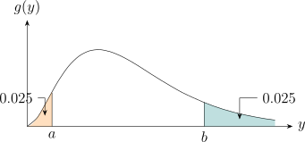
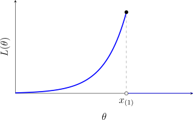
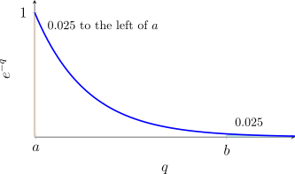

2.5 Large Sample Properties of ML Estimators
Exact sampling distributions of ML estimators are rarely available. What can almost always be said is how they behave as the sample size grows, and this behaviour is the main justification for maximum likelihood.
Definition 2.5.1. Let \(T_n\) be an estimator computed from \(X_1, \dots , X_n\). The sequence \((T_n)\) is a consistent sequence of estimators of \(\tau (\theta )\) if \(T_n\underset {P}{\longrightarrow }\tau (\theta )\) for every \(\theta \in \Omega \).
By Chebyshev’s inequality, \(T_n\) is consistent whenever its mean square error tends to zero: \(P(|T_n - \tau |\ge \varepsilon )\le \frac {\MSE (T_n)}{\varepsilon ^2}\), a bound proved exactly as Chebyshev’s inequality above. For example \(X_{(n)}\) is consistent for \(\theta \) in a \(\text {UNIF}(0, \theta )\) sample, since its mean square error \(\frac {2\theta ^2}{(n + 1)(n + 2)}\) tends to zero (example 1.2.7).
2.5.1 Consistency and Asymptotic Normality
Theorem 2.5.2. Let \(X_1, \dots , X_n\) be a random sample from a regular, identifiable model \(\{f_\theta (x) : \theta \in \Omega \}\) with \(\Omega \) an open interval, and let \(\theta _0\) be the true parameter value. Write \(S_1(\theta ; x) = \frac {\partial }{\partial \theta }\ln f_\theta (x)\). Then with probability tending to one as \(n\to \infty \), the likelihood equation \(\sum _{i=1}^n S_1(\theta ; X_i) = 0\) has a root \(\hat \theta _n\) with \(\hat \theta _n\underset {P}{\longrightarrow }\theta _0\).
Proof. Fix \(\varepsilon >0\) small enough that \([\theta _0-\varepsilon ,\theta _0+\varepsilon ]\subset \Omega \), and write \[\ell _n(\theta ) = \frac {1}{n}\sum _{i=1}^{n}\log f_{\theta }(X_i).\] For each fixed \(\theta \) the summands are independent and identically distributed, so by the weak law of large numbers \[\ell _n(\theta ) - \ell _n(\theta _0) \underset {P}{\longrightarrow } E_{\theta _0}\left [\log \frac {f_{\theta }(X)}{f_{\theta _0}(X)}\right ] = -K(\theta _0,\theta ),\] where \(K(\theta _0,\theta )\) is the Kullback–Leibler divergence. By Jensen’s inequality applied to the strictly concave logarithm, \[E_{\theta _0}\left [\log \frac {f_{\theta }(X)}{f_{\theta _0}(X)}\right ] \;\leq \; \log E_{\theta _0}\left [\frac {f_{\theta }(X)}{f_{\theta _0}(X)}\right ] = \log \int f_{\theta }(x)\,dx = 0,\] with equality only when \(f_{\theta } = f_{\theta _0}\) almost everywhere. Since the model is identifiable, \(K(\theta _0,\theta ) > 0\) for every \(\theta \neq \theta _0\).
Apply this at the two endpoints \(\theta _0 \pm \varepsilon \). With probability tending to one, \[\ell _n(\theta _0) > \ell _n(\theta _0-\varepsilon ) \qquad \text {and}\qquad \ell _n(\theta _0) > \ell _n(\theta _0+\varepsilon ),\] so \(\ell _n\) attains a local maximum at some interior point \(\widehat {\theta _n}\in (\theta _0-\varepsilon ,\theta _0+\varepsilon )\). At an interior maximum of a differentiable function the derivative vanishes, so \(\widehat {\theta _n}\) solves the likelihood equation \(\sum _{i=1}^{n}S_1(\theta ,X_i)=0\). As \(\varepsilon >0\) was arbitrary, \[P\left (\left |\widehat {\theta _n}-\theta _0\right |<\varepsilon \right )\longrightarrow 1 \qquad \text {for every } \varepsilon >0,\] which is exactly \(\widehat {\theta _n}\underset {P}{\longrightarrow }\theta _0\). □
Remark. The theorem asserts that some root of the likelihood equation is consistent, not that every root is, and not that the global maximiser is. When the likelihood equation has a unique root the distinction disappears, which is the case in most models met here; when it does not, the consistent root is the one to identify.
Theorem 2.5.3. Under the conditions of theorem 2.5.2, suppose further that \(\frac {\partial ^3}{\partial \theta ^3}\ln f_\theta (x)\) exists and is bounded near \(\theta _0\) by a function with finite mean, and that \(0<J_1(\theta _0)<\infty \), where \(J_1(\theta ) = E_\theta \left [-\frac {\partial ^2}{\partial \theta ^2}\ln f_\theta (X)\right ]\) is the Fisher information in one observation. Then the consistent root \(\hat \theta _n\) satisfies \[\sqrt n\left (\hat \theta _n - \theta _0\right )\underset {D}{\longrightarrow }N\left (0, \frac {1}{J_1(\theta _0)}\right ), \qquad \text {equivalently}\qquad \sqrt {J(\theta _0)}\left (\hat \theta _n - \theta _0\right )\underset {D}{\longrightarrow }N(0, 1),\] where \(J(\theta ) = nJ_1(\theta )\). If \(\tau \) is differentiable with \(\tau '(\theta _0)\ne 0\), then \[\sqrt n\left (\tau (\hat \theta _n) - \tau (\theta _0)\right )\underset {D}{\longrightarrow }N\left (0, \frac {\left [\tau '(\theta _0)\right ]^2}{J_1(\theta _0)}\right ).\]
Sketch of proof. Expand the score about \(\theta _0\). Since \(S(\hat \theta _n) = 0\) and \(S' = -I\), Taylor’s theorem gives \[0 = S(\hat \theta _n) = S(\theta _0) - (\hat \theta _n - \theta _0)I(\theta _n^*)\] for some \(\theta _n^*\) between \(\theta _0\) and \(\hat \theta _n\). Rearranging, \[\sqrt n\left (\hat \theta _n - \theta _0\right ) = \frac {S(\theta _0)/\sqrt n}{I(\theta _n^*)/n} .\] The numerator is \(\frac {1}{\sqrt n}\sum S_1(\theta _0; X_i)\), a normalised sum of independent terms with mean \(0\) and variance \(J_1(\theta _0)\) (theorem 2.2.1); by the central limit theorem it converges in distribution to \(N(0, J_1(\theta _0))\). In the denominator, \(\frac 1n I(\theta _0) = \frac 1n\sum I_1(\theta _0; X_i)\underset {P}{\longrightarrow }J_1(\theta _0)\) by the weak law of large numbers, and the bound on the third derivative together with \(\theta _n^*\underset {P}{\longrightarrow }\theta _0\) shows that replacing \(\theta _0\) by \(\theta _n^*\) changes the limit by a term tending to zero. By Slutsky’s theorem the ratio converges to \(\frac {1}{J_1(\theta _0)}N(0, J_1(\theta _0)) = N\left (0, \frac {1}{J_1(\theta _0)}\right )\). The statement for \(\tau (\hat \theta _n)\) then follows from the delta method, part (5) of the limit theorems with \(b = \frac 12\). □
The theorem says that, for large \(n\), the ML estimator is approximately unbiased, approximately normal, and has variance approximately \(\frac {1}{J(\theta _0)}\), the Cramér–Rao bound. In this sense it is asymptotically efficient: no regular unbiased estimator can do better. The uniform and shifted exponential models are not regular, and there the ML estimator converges at the faster rate \(\frac 1n\) (example 2.5.7).
2.5.2 Pivotal Quantities and Confidence Intervals
Definition 2.5.4. A pivotal quantity is a function \(Q(X, \theta )\) of the data and the parameter whose distribution does not depend on \(\theta \) or on any other unknown parameter. An asymptotic pivotal quantity is one whose distribution converges, as \(n\to \infty \), to a distribution free of unknown parameters.
For a random sample from \(N(\theta , \sigma ^2)\) with \(\sigma ^2\) known, \(Q = \frac {\sqrt n(\bar X - \theta )}{\sigma }\sim N(0, 1)\) is pivotal. For a random sample from any distribution with mean \(\theta \) and known variance \(\sigma ^2\), the same \(Q\) is asymptotically pivotal by the central limit theorem.
A pivot gives a confidence interval. Choose constants \(c_1<c_2\) with \(P\left (c_1<Q(X, \theta )<c_2\right ) = 1 - \alpha \). If \(Q\) is monotone in \(\theta \), the event \(c_1<Q(X, \theta )<c_2\) can be rewritten as \(C_1(X)<\theta <C_2(X)\), and then \(\left [C_1(X), C_2(X)\right ]\) is a \(100(1 - \alpha )\%\) confidence interval for \(\theta \).
When no exact pivot is available, theorem 2.5.3 supplies an asymptotic one. Since \(J(\hat \theta _n)/J(\theta _0)\underset {P}{\longrightarrow }1\), Slutsky’s theorem allows the unknown information to be estimated, and both \[\sqrt {J(\hat \theta _n)}\left (\hat \theta _n - \theta \right )\qquad \text {and}\qquad \sqrt {I(\hat \theta _n)}\left (\hat \theta _n - \theta \right )\] converge in distribution to \(N(0, 1)\). The resulting approximate \(95\%\) interval is \[\hat \theta _n\pm \frac {1.96}{\sqrt {J(\hat \theta _n)}} .\]
Example 2.5.5. Let \(X_1, \dots , X_n\) be a random sample from \(f_\theta (x) = \theta x^{\theta - 1}\), \(0<x<1\).
- (a)
- Find the ML estimator of \(\theta \).
- (b)
- Find an approximate \(95\%\) confidence interval for \(\theta \) from the asymptotic distribution of \(\hat \theta _n\).
- (c)
- Find an exact \(95\%\) confidence interval for \(\theta \).
- (d)
- Compute both for \(n = 10\) and \(-\sum \ln x_i = 4.0\).
Solution.
- (a)
- \(\mathcal {L}(\theta ) = n\ln \theta + (\theta - 1)\sum \ln x_i\), so \(S(\theta ) = \frac n\theta + \sum \ln x_i\) and \(\hat \theta _n = \frac nT\) with \(T = -\sum \ln X_i\).
- (b)
- \(I(\theta ) = \frac {n}{\theta ^2} = J(\theta )\), so the approximate interval is \[\hat \theta _n\pm 1.96\frac {\hat \theta _n}{\sqrt n} = \frac nT\pm 1.96\frac {\sqrt n}{T} .\]
- (c)
- As in example 2.3.4, \(T\sim \text {GAM}\left (n, \frac 1\theta \right )\), so \(Y = 2\theta T\sim \text {GAM}(n, 2) = \chi ^2(2n)\) is an exact pivot. Let \(a\) and \(b\) be the lower and upper \(2.5\%\) points of \(\chi ^2(2n)\), so that \(P(a<Y<b) = 0.95\), as in figure 2.5.2. Then \[0.95 = P(a<2\theta T<b) = P\left (\frac {a}{2T}<\theta <\frac {b}{2T}\right ),\] and \(\left [\frac {a}{2T}, \frac {b}{2T}\right ]\) is an exact \(95\%\) confidence interval.
- (d)
- \(\hat \theta = \frac {10}{4} = 2.5\). The approximate interval is \(2.5\pm 1.96\cdot \frac {2.5}{\sqrt {10}} = 2.5\pm 1.550\), that is \((0.95, 4.05)\). For \(\chi ^2(20)\), \(a = 9.591\) and \(b = 34.170\), so the exact interval is \(\left (\frac {9.591}{8}, \frac {34.170}{8}\right ) = (1.20, 4.27)\). The exact interval is not symmetric about \(\hat \theta \); it reflects the skewness of the sampling distribution, which the normal approximation ignores at this sample size.

Example 2.5.6. Let \(X_1, \dots , X_n\) be a random sample from \(\text {POI}(\theta )\). Find approximate \(95\%\) confidence intervals for \(\theta \) and for \(\tau (\theta ) = e^{-\theta }\), and compute them for \(n = 50\) and \(\bar x = 2.4\).
Solution. By example 2.1.3, \(\hat \theta _n = \bar X\) and \(J(\theta ) = \frac n\theta \). The approximate interval for \(\theta \) is \[\bar x\pm 1.96\sqrt {\frac {\bar x}{n}} .\] For \(\tau (\theta ) = e^{-\theta }\), \(\tau '(\theta ) = -e^{-\theta }\), and by theorem 2.5.3 \(\tau (\hat \theta _n)\) is approximately normal with mean \(\tau (\theta )\) and variance \(\frac {[\tau '(\theta )]^2}{J(\theta )} = \frac {e^{-2\theta }\theta }{n}\). The interval is \[e^{-\bar x}\pm 1.96\,e^{-\bar x}\sqrt {\frac {\bar x}{n}} .\] For \(n = 50\) and \(\bar x = 2.4\), \(\sqrt {\bar x/n} = 0.2191\), so the interval for \(\theta \) is \(2.4\pm 0.429 = (1.97, 2.83)\), and the interval for \(e^{-\theta }\) is \(0.0907\pm 0.0390 = (0.052, 0.130)\). A slightly better interval for \(e^{-\theta }\) is obtained by transforming the endpoints of the first interval: \((e^{-2.83}, e^{-1.97}) = (0.059, 0.139)\), which, unlike the delta-method interval, can never contain negative values.
Example 2.5.7. Let \(X_1, \dots , X_n\) be a random sample from the shifted exponential distribution \(f_\theta (x) = e^{-(x - \theta )}\), \(x>\theta \). Find the ML estimator of \(\theta \), show that it is consistent, find the distribution of \(n(\hat \theta _n - \theta )\), and use it to construct a \(95\%\) confidence interval for \(\theta \).
Solution. \[L(\theta ) = \prod ^n_{i = 1}e^{-(x_i - \theta )}I(x_i>\theta ) = e^{n\theta - \sum x_i}I\left (x_{(1)}>\theta \right ).\] This increases in \(\theta \) up to \(x_{(1)}\) and is zero beyond it (figure 2.2), so \(\hat \theta _n = X_{(1)}\).
Each \(X_i\) has \(P(X_i>y) = e^{-(y - \theta )}\) for \(y>\theta \), so \(P(X_{(1)}>y) = e^{-n(y - \theta )}\). Since \(X_{(1)}>\theta \) always, for \(\varepsilon >0\) \[P\left (\left |X_{(1)} - \theta \right |>\varepsilon \right ) = P\left (X_{(1)}>\theta + \varepsilon \right ) = e^{-n\varepsilon }\longrightarrow 0,\] and \(\hat \theta _n\) is consistent. Moreover, for \(t>0\), \[P\left (n(X_{(1)} - \theta )\le t\right ) = 1 - P\left (X_{(1)}>\theta + \frac tn\right ) = 1 - e^{-t},\] so \(Q = n(X_{(1)} - \theta )\sim \text {EXP}(1)\) exactly, whatever \(n\). It is an exact pivot, and the error of \(\hat \theta _n\) is of order \(\frac 1n\) rather than \(\frac {1}{\sqrt n}\): the model is not regular, and theorem 2.5.3 does not apply.
For an equal-tailed interval take \(a = -\ln 0.975 = 0.0253\) and \(b = -\ln 0.025 = 3.689\), so that \(P(a<Q<b) = 0.95\) (figure 2.3). Then \[0.95 = P\left (a<n(X_{(1)} - \theta )<b\right ) = P\left (X_{(1)} - \frac bn<\theta <X_{(1)} - \frac an\right ),\] giving the interval \(\left [X_{(1)} - \frac {3.689}{n},\ X_{(1)} - \frac {0.0253}{n}\right ]\). Because the density of \(Q\) is decreasing, the shortest \(95\%\) interval puts all the excluded probability in the upper tail: \(P(0<Q<-\ln 0.05) = 0.95\) gives \(\left [X_{(1)} - \frac {2.996}{n},\ X_{(1)}\right ]\), of length \(\frac {2.996}{n}\) against \(\frac {3.663}{n}\).


Problem 2.5.1. Suppose \(X_1, \, \cdots \, , \, X_n\) is a random sample from the \(UNIF(0,\theta )\) distribution. Show that the \(ML\) estimator \(\widehat {\theta }_n\) is a consistent estimator of \(\theta \) and find the asymptotic distribution of \(n\left (\widehat {\theta }_n - \theta \right )\).
Show solution
Solution. The maximum likelihood estimator is \(\widehat {\theta }_n = X_{(n)}\), since the likelihood \(\theta ^{-n}I\left (x_{(n)}<\theta \right )\) is decreasing in \(\theta \) and so is largest at the smallest admissible value.
Consistency
For \(0<\varepsilon <\theta \), and since \(X_{(n)}\leq \theta \) always, \[P\left (\left |X_{(n)}-\theta \right |>\varepsilon \right ) = P\left (X_{(n)}<\theta -\varepsilon \right ) = \left (\frac {\theta -\varepsilon }{\theta }\right )^{n}\longrightarrow 0 ,\] because the base is strictly between \(0\) and \(1\). Hence \(\widehat {\theta }_n\underset {P}{\longrightarrow }\theta \).
Asymptotic distribution
For \(w>0\), \[P\left (n\left (\theta -X_{(n)}\right ) > w\right ) = P\left (X_{(n)} < \theta - \frac {w}{n}\right ) = \left (1-\frac {w}{n\theta }\right )^{n} \longrightarrow e^{-w/\theta } .\] So \(n\left (\theta -\widehat {\theta }_n\right )\) converges in distribution to an exponential variable with mean \(\theta \), and equivalently \[n\left (\widehat {\theta }_n - \theta \right ) \underset {D}{\longrightarrow } -W, \qquad W\sim \text {EXP}(\theta ).\]
Remark. Two departures from the standard theory are worth naming. The rate is \(n\), not \(\sqrt {n}\), so the estimator converges much faster than usual; and the limit is exponential rather than normal, and is supported entirely on one side of zero. Neither contradicts the large-sample theory of this chapter, because that theory assumes the support of the density does not depend on the parameter — and here it does. This is the standard example of a non-regular model.
Problem 2.5.2. The lifetimes of a certain type of electronic equipment follows the \(EXP(\theta )\) distribution. Ten components where tested independently with the observed lifetimes, to the nearest days, given by
| 70 | 11 | 66 | 5 | 20 | 4 | 35 | 40 | 29 | 8 |
Find
- (a)
- \(ML\) estimator of \(\theta \) and verify its a maximum.
- (b)
- Fisher information and evaluate an approximate \(95\%\) C.I for \(\theta \).
- (c)
- The exact \(95\%\) C.I for \(\theta \).
Show solution
Solution. The ten observations sum to \(\sum x_i = 288\), so \(\overline {x}=28.8\).
(a)
For the EXP\((\theta )\) density \(f_{\theta }(x)=\theta ^{-1}e^{-x/\theta }\), \[\log L = -n\log \theta - \frac {1}{\theta }\sum _i x_i,\qquad S(\theta ) = -\frac {n}{\theta } + \frac {\sum _i x_i}{\theta ^{2}} .\] Setting \(S=0\) gives \(\widehat {\theta }=\overline {x}=28.8\) days. It is a maximum because \[\left .\frac {\partial ^{2}\log L}{\partial \theta ^{2}}\right |_{\theta =\overline {x}} = \frac {n}{\overline {x}^{2}} - \frac {2\sum _i x_i}{\overline {x}^{3}} = \frac {n}{\overline {x}^{2}} - \frac {2n}{\overline {x}^{2}} = -\frac {n}{\overline {x}^{2}} < 0 .\]
(b)
\(-E\left [\partial ^{2}\log L/\partial \theta ^{2}\right ] = n/\theta ^{2}\), so \(I_n(\theta )=n/\theta ^{2}\) and the asymptotic standard error is \(\widehat {\theta }/\sqrt {n} = 28.8/\sqrt {10} = 9.107\). An approximate \(95\%\) interval is \[28.8 \pm 1.96(9.107) = (10.95,\ 46.65).\]
(c)
Exactly, \(2\sum _i X_i/\theta \sim \chi ^{2}_{(2n)} = \chi ^{2}_{(20)}\). From the tables \(\chi ^{2}_{20,\,0.975}=34.170\) and \(\chi ^{2}_{20,\,0.025}=9.591\), so \[\left (\frac {2(288)}{34.170},\ \frac {2(288)}{9.591}\right ) = (16.86,\ 60.06).\]
Remark. The exact interval is both wider and markedly asymmetric about \(28.8\), while the approximate one is symmetric by construction. With \(n=10\) the normal approximation is simply not good enough — and note the approximate interval’s lower endpoint, \(10.95\), sits well below the exact one at \(16.86\). Use the exact interval whenever the pivotal quantity is available, as it is here.
2.5.3 The Multiparameter Case
When \(\theta = (\theta _1, \dots , \theta _k)^{\mathsf T}\) the likelihood equation is a system of \(k\) equations in \(k\) unknowns. Under regularity conditions like those of theorems 2.5.2 and 2.5.3, there is a consistent root \(\hat \theta _n\), and \[\sqrt n\left (\hat \theta _n - \theta \right )\underset {D}{\longrightarrow }\text {MVN}\left (0, J_1(\theta )^{-1}\right ),\] where \(J_1(\theta )\) is the Fisher information matrix of one observation. For a differentiable function \(\tau (\theta )\) with gradient \(D(\theta ) = \left (\frac {\partial \tau }{\partial \theta _1}, \dots , \frac {\partial \tau }{\partial \theta _k}\right )^{\mathsf T}\), the delta method gives \[\sqrt n\left (\tau (\hat \theta _n) - \tau (\theta )\right )\underset {D}{\longrightarrow }N\left (0, D(\theta )^{\mathsf T}J_1(\theta )^{-1}D(\theta )\right ).\] Approximate confidence intervals for a single component \(\theta _j\) come from the approximate normality of \[\frac {\hat \theta _j - \theta _j}{\sqrt {\left [J(\hat \theta _n)^{-1}\right ]_{jj}}}\qquad \text {or}\qquad \frac {\hat \theta _j - \theta _j}{\sqrt {\left [I(\hat \theta _n)^{-1}\right ]_{jj}}},\] where \(\left [J^{-1}\right ]_{jj}\) is the \((j, j)\) entry of the inverse matrix, not the reciprocal of \(J_{jj}\). The difference matters: the reciprocal of the diagonal entry is the variance the estimator would have if the other parameters were known.
Example 2.5.8. Let \(X_1, \dots , X_n\) be a random sample from \(\text {GAM}(\alpha , \beta )\). Find approximate \(95\%\) confidence intervals for \(\beta \) and for the mean \(\tau (\theta ) = \alpha \beta \).
Solution. From example 2.2.6, \(J(\theta ) = n\begin {pmatrix}\psi '(\alpha ) & \frac 1\beta \\ \frac 1\beta & \frac {\alpha }{\beta ^2}\end {pmatrix}\), with determinant \(\frac {n^2\left (\alpha \psi '(\alpha ) - 1\right )}{\beta ^2}\), so \[J(\theta )^{-1} = \frac {\beta ^2}{n\left (\alpha \psi '(\alpha ) - 1\right )} \begin {pmatrix}\frac {\alpha }{\beta ^2} & -\frac 1\beta \\[1ex] -\frac 1\beta & \psi '(\alpha )\end {pmatrix}.\] The \((2, 2)\) entry is \(\frac {\beta ^2\psi '(\alpha )}{n\left (\alpha \psi '(\alpha ) - 1\right )}\), and the approximate interval for \(\beta \) is \[\hat \beta \pm 1.96\,\hat \beta \sqrt {\frac {\psi '(\hat \alpha )}{n\left (\hat \alpha \psi '(\hat \alpha ) - 1\right )}} .\] For \(\tau = \alpha \beta \), \(D(\theta ) = (\beta , \alpha )^{\mathsf T}\) and \[D^{\mathsf T}J^{-1}D = \frac {\beta ^2}{n\left (\alpha \psi '(\alpha ) - 1\right )} \left [\alpha - 2\alpha + \alpha ^2\psi '(\alpha )\right ] = \frac {\alpha \beta ^2}{n} .\] So the interval for the mean is \(\hat \alpha \hat \beta \pm 1.96\,\hat \beta \sqrt {\frac {\hat \alpha }{n}}\). This has a simple explanation: the second score equation of example 2.2.6 says \(\hat \alpha \hat \beta = \bar x\), and \(\var (\bar X) = \frac {\alpha \beta ^2}{n}\) exactly.
Problem 2.5.3. For problem 2.2.1, find an approximate \(95\%\) C.I for \[\ \tau (\theta ) = \cov (X_1, X_2) = -n\theta _1\theta _2.\]
Show solution
Solution. From the multinomial problem, \(\widehat {\theta }_j = X_j/n\) and \[J(\theta ) = n\begin {pmatrix} \dfrac {1}{\theta _1}+\dfrac {1}{\theta _3} & \dfrac {1}{\theta _3}\\[6pt] \dfrac {1}{\theta _3} & \dfrac {1}{\theta _2}+\dfrac {1}{\theta _3}\end {pmatrix}, \qquad J^{-1}(\theta ) = \frac {1}{n}\begin {pmatrix} \theta _1(1-\theta _1) & -\theta _1\theta _2\\ -\theta _1\theta _2 & \theta _2(1-\theta _2)\end {pmatrix}.\] With \(\tau (\theta ) = -n\theta _1\theta _2\), \[D(\theta ) = \left (\frac {\partial \tau }{\partial \theta _1},\ \frac {\partial \tau }{\partial \theta _2}\right )^{t} = -n\left (\theta _2,\ \theta _1\right )^{t},\] and the delta method gives \[\var \left (\widehat {\tau }\right ) \approx D^{t}J^{-1}D = n\,\theta _1\theta _2\left (\theta _1+\theta _2-4\theta _1\theta _2\right ).\] Substituting the estimates, an approximate \(95\%\) interval for \(\cov (X_1,X_2)\) is \[-n\widehat {\theta }_1\widehat {\theta }_2 \ \pm \ 1.96 \sqrt {n\,\widehat {\theta }_1\widehat {\theta }_2 \left (\widehat {\theta }_1+\widehat {\theta }_2-4\widehat {\theta }_1\widehat {\theta }_2\right )} .\] The interval should be truncated at zero on the right, since a multinomial covariance is always negative.
Problem 2.5.4. In problem 2.2.2, find an approximate \(95\%\) C.I for \(\beta \) and \(E(X)\).
Show solution
Solution. From the earlier problem the information matrix for \(\theta =(\alpha ,\beta )^{t}\) is \[J(\theta ) = n\begin {pmatrix} \dfrac {1}{\alpha ^{2}} & \dfrac {1}{\beta (\alpha +1)}\\[6pt] \dfrac {1}{\beta (\alpha +1)} & \dfrac {\alpha }{\beta ^{2}(\alpha +2)}\end {pmatrix},\] whose determinant is \begin {align*} \left |J\right | &= n^{2}\left [\frac {1}{\alpha \beta ^{2}(\alpha +2)} - \frac {1}{\beta ^{2}(\alpha +1)^{2}}\right ]\\ &= \frac {n^{2}}{\alpha \beta ^{2}(\alpha +2)(\alpha +1)^{2}} \left [(\alpha +1)^{2}-\alpha (\alpha +2)\right ]\\ &= \frac {n^{2}}{\alpha \beta ^{2}(\alpha +2)(\alpha +1)^{2}} , \end {align*}
using \((\alpha +1)^{2}-\alpha (\alpha +2)=1\).
Interval for \(\beta \)
The relevant entry of \(J^{-1}\) is \[\left [J^{-1}\right ]_{22} = \frac {n/\alpha ^{2}}{\left |J\right |} = \frac {\beta ^{2}(\alpha +1)^{2}(\alpha +2)}{n\,\alpha },\] so an approximate \(95\%\) interval is \[\widehat {\beta } \pm 1.96\,\frac {\widehat {\beta }\left (\widehat {\alpha }+1\right )}{\sqrt {n}} \sqrt {\frac {\widehat {\alpha }+2}{\widehat {\alpha }}} .\]
Interval for \(E(X)\)
Integration gives \(\tau (\theta )=E(X)=\frac {1}{\beta (\alpha -1)}\) for \(\alpha >1\), so \[D(\theta ) = \left (-\frac {1}{\beta (\alpha -1)^{2}},\ -\frac {1}{\beta ^{2}(\alpha -1)}\right )^{t},\] and the interval is \(\widehat {\tau } \pm 1.96\sqrt {D^{t}J^{-1}D}\) with everything evaluated at the maximum likelihood estimates. Note the mean does not exist at all unless \(\alpha >1\), so the interval is meaningful only when \(\widehat {\alpha }\) is comfortably above one.
Problem 2.5.5. Suppose \(X_1, \, \cdots \, , \, X_n\) is a random sample from the \(BETA(\alpha \, ,\, \beta )\) distribution. Explain how you would find the \(ML\) estimate of \(\theta = (\alpha , \beta )^t\), approximate \(95\%\) C.I’s for \(\alpha \) and \[\tau (\theta ) = E(X) = \frac {\alpha }{\alpha + \beta }.\]
Show solution
Solution.
The estimate
\[\log L = n\log \Gamma (\alpha +\beta ) - n\log \Gamma (\alpha ) - n\log \Gamma (\beta ) + (\alpha -1)\sum _i\log x_i + (\beta -1)\sum _i\log (1-x_i).\] Differentiating and writing \(\psi =\Gamma '/\Gamma \) for the digamma function, the likelihood equations are \[\psi (\alpha +\beta )-\psi (\alpha ) = -\frac {1}{n}\sum _i\log x_i,\qquad \psi (\alpha +\beta )-\psi (\beta ) = -\frac {1}{n}\sum _i\log (1-x_i).\] Neither can be solved in closed form; the pair is solved numerically by Newton–Raphson, using method-of-moments values as starting points. This is the same situation as the previous problem, but with no parameter eliminable in closed form, so the search is two-dimensional.
The information matrix
Differentiating once more gives, with \(\psi '\) the trigamma function, \[J(\theta ) = n\begin {pmatrix} \psi '(\alpha )-\psi '(\alpha +\beta ) & -\psi '(\alpha +\beta )\\ -\psi '(\alpha +\beta ) & \psi '(\beta )-\psi '(\alpha +\beta )\end {pmatrix},\] which is free of the data, so the observed and expected information coincide.
Intervals
For \(\alpha \), use \(\widehat {\alpha }\pm 1.96\sqrt {\left [J^{-1}\right ]_{11}}\) evaluated at the estimates. For \(\tau (\theta )=\alpha /(\alpha +\beta )\), \[D(\theta ) = \left (\frac {\beta }{(\alpha +\beta )^{2}},\ \frac {-\alpha }{(\alpha +\beta )^{2}}\right )^{t},\] and the interval is \(\widehat {\tau }\pm 1.96\sqrt {D^{t}J^{-1}D}\). Since \(\tau \) is a probability the interval should be truncated to \([0,1]\); a logit transformation before applying the delta method usually behaves better near the endpoints.
Further reading
- 1.
- Fisher, R. A. (1925), Theory of statistical estimation, Proceedings of the Cambridge Philosophical Society, 22, 700–725.
- 2.
- Cramér, H. (1946), Mathematical Methods of Statistics, Princeton University Press, chapters 32 and 33.
- 3.
- Wald, A. (1949), Note on the consistency of the maximum likelihood estimate, Annals of Mathematical Statistics, 20, 595–601.
- 4.
- Le Cam, L. (1953), On some asymptotic properties of maximum likelihood estimates and related Bayes’ estimates, University of California Publications in Statistics, 1, 277–330.
Questions on this section
Stuck on something here? Ask below and it stays attached to this topic.